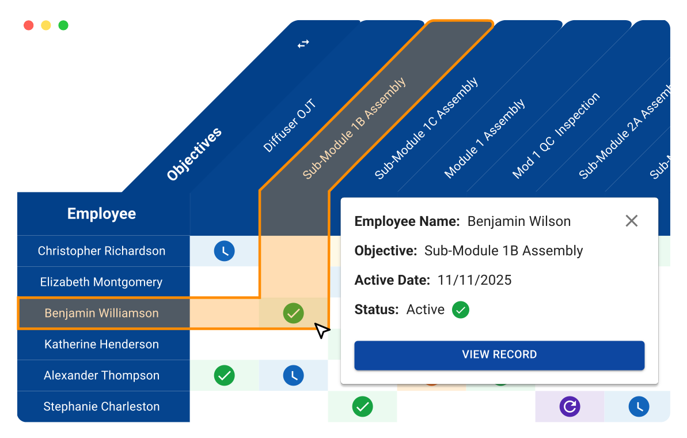

Plan, develop, and deploy your workforce.
Covalent replaces paper OJT and spreadsheets with real-time skills visibility, so teams know who's qualified, close coverage gaps, and stay audit-ready.
Demo Covalent and get a FREE Yeti Cooler*
*Terms and conditions apply.

Trusted by complex manufacturers


Why manufacturers choose Covalent
Make training records operational. Give supervisors the visibility they need to manage qualification, coverage, and risk in real time.
Know who's ready now
See who is qualified, in training, expired, or available to backfill by role, line, shift, or process.
Catch coverage gaps early
Spot thin coverage before call-outs, demand changes, or expiring qualifications disrupt production.
Prove every qualification
Keep OJT tasks, evaluations, sign-offs, timestamps, and requalification history tied to each worker record.
Most plants still make decisions with incomplete skills data.
Covalent turns fragmented training records into a live system of record for workforce capability, so teams can answer the questions that matter before the shift starts.
Who is qualified right now?
Where are we short on coverage?
Can we prove training during an audit?
Coverage plan
Line 1 readiness
Sub-Module 1B Assembly
4 / 6 qualified
Module 1 QC Inspection
3 / 5 qualified
Packaging & Shipping
7 / 7 qualified
Build training workflows your way.
Define the exact steps each skill requires. From OJT tasks and trainer sign-offs to evaluations, approvals, and requalification rules.
Capture proof at every step
Every action is tied to the worker, evaluator, timestamp, and requirement, so teams can prove who was qualified, when, and by whom.
Keep qualifications current
Trigger requalification when skills expire, processes change, or workers need refreshers — before gaps show up during production or an audit.
Module A OJT
In ProgressJonathan Washington (ID #12345678)
Assigned: May 1st, 2026
-
Assignment
-
Initial Sign Off(s)
2/2 Sign Off(s)
-
Training
1/3 Task(s)
-
Evaluation(s)
0/2 Evaluation(s)
-
Final Sign Off(s)
0/2 Sign Off(s)
Turn training data into operational decisions
Built to improve training efficiency, audit readiness, and workforce decision-making across complex manufacturing environments.
65%
reduction in training time
1,000+
audits passed
92%
of manual admin tasks digitized
5%
increase in line productivity
Plans built for how you grow.
Two plans designed around the size and complexity of your operation. Talk with our team to find the right fit.
Essentials
For growing manufacturers ready to leave spreadsheets behind.
Standout features
- Interactive skills matrix
- Training & evaluation workflows
- Coverage planning
- Audit-ready records
- Single sign-on
Enterprise
For complex, multi-site, regulated manufacturers.
Standout features
Everything in Essentials, plus:
- Performance management
- Intelligent Work Allocation
- HR, MES, and ERP integrations
- Dedicated success manager
- Multi-site rollout support
Ready to replace spreadsheets?
See how Covalent gives your team a live skills matrix, coverage visibility, and audit-ready training records.
Free Yeti Cooler for qualified demos*